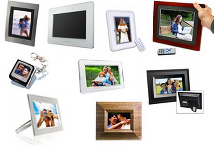

Всё о правильном выборе цифровой фоторамки.
Цифровая фоторамка довольно новое понятие, но все же ставшее популярным среди большинства людей. Теперь это не только диковинка, которую могли позволить себе лишь некоторые, но и часть интерьера,
получающая все большую популярность. Кроме того цифровую фоторамку становится модным дарить другим. (Может нужен компьютер на работу по безналичному расчету - тогда купи
компьютер по безналу)
Стоит признать, что все они разные. У каждой из них есть свои особенности, так называемая «начинка», делающая каждую рамку индивидуальной. Какой же рамке отдать предпочтение? Этот вопрос
наиболее важен, когда рамка приобретается для презента или становится важной частью интерьера комнаты.

Если фоторамка покупается с целью подарка, тогда первое на что стоит обратить внимание при ее выборе – это поставить себя
на место того человека и подумать о его вкусах. Сделав это можно приступить к следующим шагам.
Первое, что бросается в глаза при виде фоторамок – их форма. Дизайнерским решениям сейчас нет конца. Теперь это не просто прямоугольная фигура белого или стандартного черного цвета, хотя стоит признать, что этот
цвет наиболее популярен. Формы рамок чаще уже более обтекаемы, плавны и имеют очертания.
Очередным этапом выбора служит размер экрана рамки. В цифровом мире он измеряется при помощи дюймов, а не сантиметров. Размеры современных рамок варьируются от 7 и до 17 дюймов. Какой размер будет оптимальным?
Все зависит от цели. Для домашнего обихода подойдут рамки, диагональ которых не превышает 10, поскольку они большие и лучше подходят для офисов в рекламных целях. Что касается дома, в зависимости от места нахождения
выбирается и размер. Если это обычная полочка, прекрасным размером будет 7 дюймов, стол – 12. А вот для
стены подойдут рамки, имеющие позолоченную кайму или под цвет дерева, размером 10.
А теперь обсудим некоторые подробности. Очень важно, какое разрешение имеет эта рамка (количество пикселей на дюйм). Эта характеристика важна в тех случаях, когда должны быть видны мелкие детали, например волосы,
брызги воды и прочее. Только с высоким
разрешением такая фотография будет иметь смысл. Если же там нечеткие пейзажи, можно приобрести и с меньшим качеством.
Также есть и более мелкие, но полезные детали. К примеру, наличие календаря, музыки, которая будет, кстати, если прокручиваются слайды или небольшое видео с вечеринки. Также есть рамки и с другими удобствами. Это
радио, наличие памяти. В зависимости от цели использования рамки можно выбрать подходящую.
Также можно консультироваться с продавцом, который учтет все пожелания и порекомендует лучшее. В случаи поломки компьютерной техники, лучше не пытаться отремонтировать самому дома, а обратиться в
ремонт компьютеров на дому.
Читайте также:
Как правильно выбрать компьютер для офиса.
Компьютер ребенку. Правильный выбор.
Следующая статья:
ГЛОНАСС и GPS.